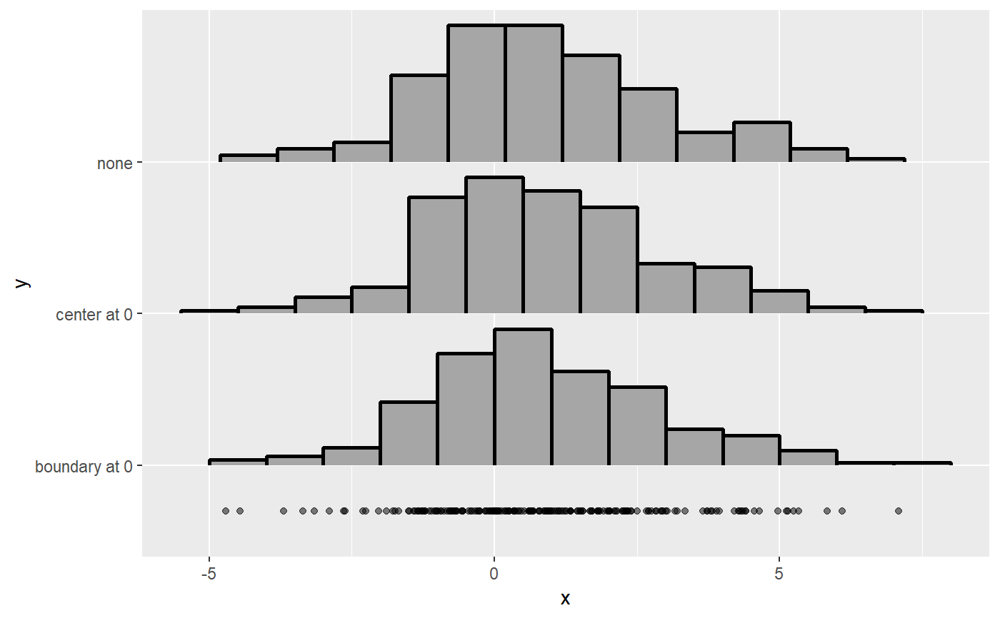

Methods for aligning breaks (bins) in histograms, as used in the align
argument to density_histogram().
Supports automatic partial function application.
align_none(breaks)
align_boundary(breaks, at = 0)
align_center(breaks, at = 0)A sorted vector of breaks (bin edges).
A scalar numeric giving an alignment point.
For align_boundary(): align breaks so that a bin edge lines up with at.
For align_center(): align breaks so that the center of a bin lines up with at.
A scalar numeric returning an offset to be subtracted from breaks.
These functions take a sorted vector of equally-spaced breaks giving
bin edges and return a numeric offset which, if subtracted from breaks,
will align them as desired:
align_none() performs no alignment (it always returns 0).
align_boundary() ensures that a bin edge lines up with at.
align_center() ensures that a bin center lines up with at.
For align_boundary() (respectively align_center()), if no bin edge (or center) in the
range of breaks would line up with at, it ensures that at is an integer
multiple of the bin width away from a bin edge (or center).
library(ggplot2)
#> Warning: package 'ggplot2' was built under R version 4.2.3
set.seed(1234)
x = rnorm(200, 1, 2)
# If we manually specify a bin width using breaks_fixed(), the default
# alignment (align_none()) will not align bin edges to any "pretty" numbers.
# Here is a comparison of the three alignment methods on such a histogram:
ggplot(data.frame(x), aes(x)) +
stat_slab(
aes(y = "none"),
density = "histogram",
breaks = breaks_fixed(width = 1),
outline_bars = TRUE,
# no need to specify align; align_none() is the default
color = "black",
) +
stat_slab(
aes(y = "center at 0"),
density = "histogram",
breaks = breaks_fixed(width = 1),
align = align_center(at = 0), # or align = "center"
outline_bars = TRUE,
color = "black",
) +
stat_slab(
aes(y = "boundary at 0"),
density = "histogram",
breaks = breaks_fixed(width = 1),
align = align_boundary(at = 0), # or align = "boundary"
outline_bars = TRUE,
color = "black",
) +
geom_point(aes(y = 0.7), alpha = 0.5)
